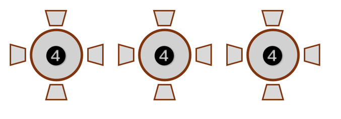
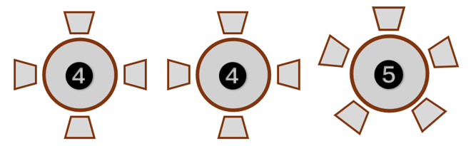

Descripción de la situación de aprendizaje.
Etapa educativa y nivel al que se dirige:
La situación de aprendizaje está dirigida al alumnado de 6º de Primaria, que se divide en dos grupos:
- 6ºA 12 alumnas/os
- 6ºB 13 alumnas/os
Áreas, materias y/o módulos implicados:
La Situación de Aprendizaje que se plantea va dirigida al bienestar emocional, por lo que considero adecuado plantearla como algo interdisciplinar, ya que el bienestar emocional atraviesa múltiples ámbitos del desarrollo del alumnado. No solo corresponde a una materia concreta, sino que se puede trabajar desde varias áreas del currículo de forma integrada.
Destaca su carácter transversal a todas las materias en las que se fortalecerán a implementarán los conceptos trabajados en la situación de aprendizaje. Las sesiones que se diseñen se llevarán a cabo cada semana en una asignatura diferente, para no afectar al contenido de ninguna en concreto.
Agrupamientos y organización espacial:
En la situación de aprendizaje se trabajarán las diferentes emociones primarias y partiendo de ellas se desglosarán las emociones secundarias que las componen. Seis emociones principales son las que articulan todo este mapa visual. Tres se sitúan en la parte superior: alegría, amor y felicidad; y otras tres se sitúan en la parte inferior: miedo, ira y tristeza.
Para trabajar estas seis emociones dividiremos los grupos en 3 subgrupos para que cada grupo trabaje con una de las emociones. El aula se dividirá en grupos de trabajo de esta manera:
- 6ºA:

- 6ºB:

Temporalización:
- Primera sesión de presentación de la SdA, formación de grupos, organización del aula y metodologías de trabajo
- Segunda sesión: emociones primarias. Contenido y actividades.
- Tercera sesión: emociones secundarias. Contenido y actividades.
- Cuarta sesión: Trabajo cooperativo, cada grupo una emoción principal.
- Quinta sesión: presentación de los proyectos.
- Última sesión: autoevaluación y reflexión.
Productos que desarrollará el alumnado:
A lo largo de la presente Situación de Aprendizaje, el alumnado elaborará diversos productos vinculados al desarrollo de la competencia emocional, tanto individuales como grupales, algunas de estas:
- Actividades interactivas individuales o colectivas: al finalizar los contenidos.
- Infografía digital: Cada grupo trabajará una emoción principal (alegría, miedo, tristeza, ira…) que incluirá: definición de la emoción; situaciones en las que aparece; manifestaciones físicas y cognitivas; estrategias de regulación.
- Producto digital final: el alumnado elaborará un producto de divulgación emocional, que podrá ser un vídeo o un podcast.
Herramientas tecnológicas que utilizarán docentes y alumnado:
Para las actividades relativas a los contenidos se utilizarán las herramientas que ofrece ExeLearning.
Para las infografías digitales se podrán utilizar libremente aplicaciones como: Canva, Genially, Power Point, etc.
Para la grabación de videos y/o podcast se pueden utilizar aplicaciones como: Loom, Audacity, iMovie, etc.
Además se utilizarán aplicaciones como: Google Forms para formularios y autoevaluación finales, Teams para la organización de sesiones, bancos de videos como Youtube para apoyar visualmente alguna sesión etc.